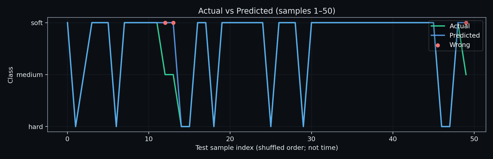
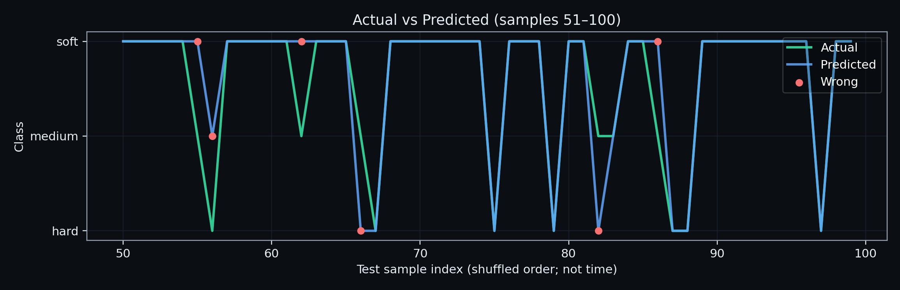
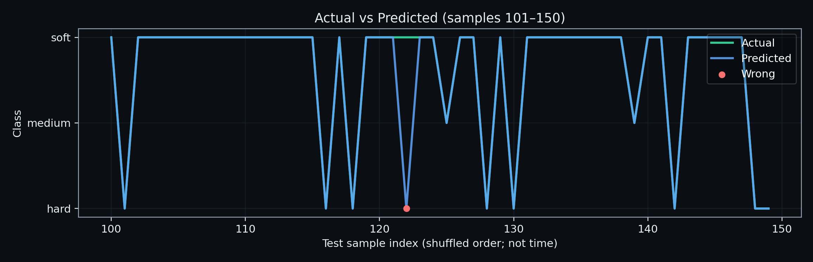
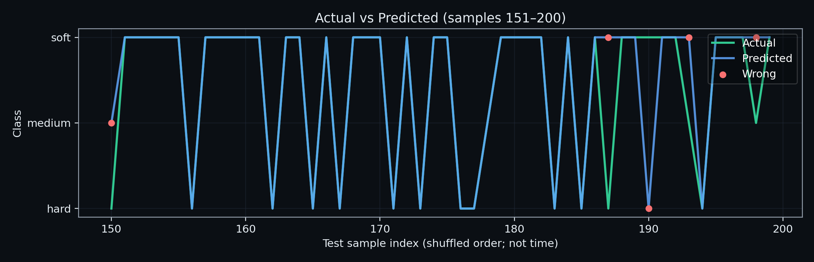
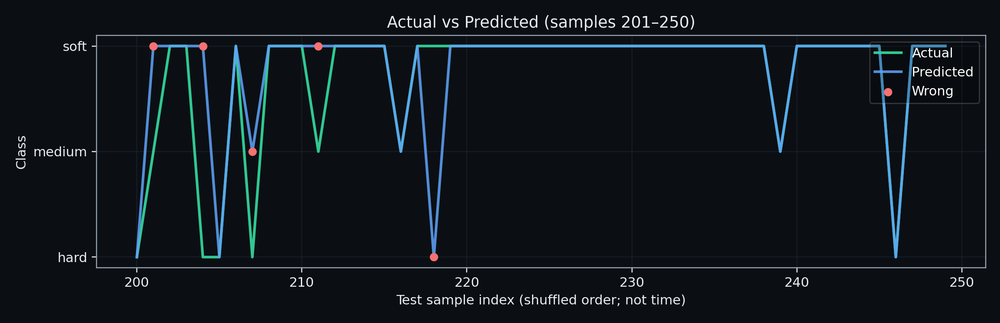
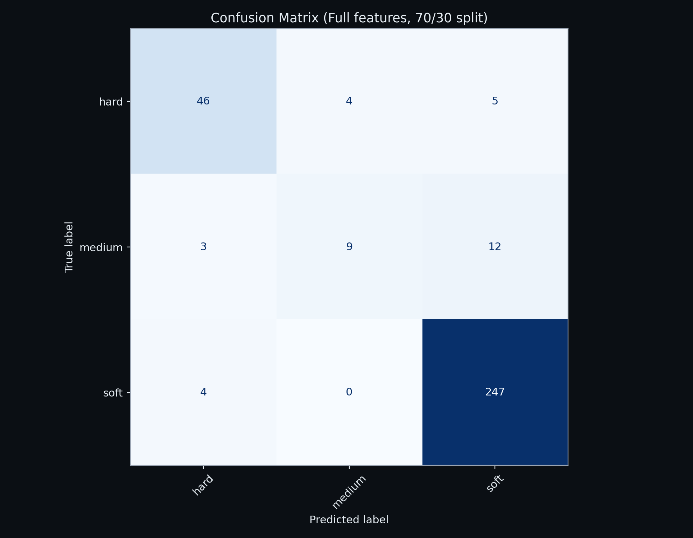
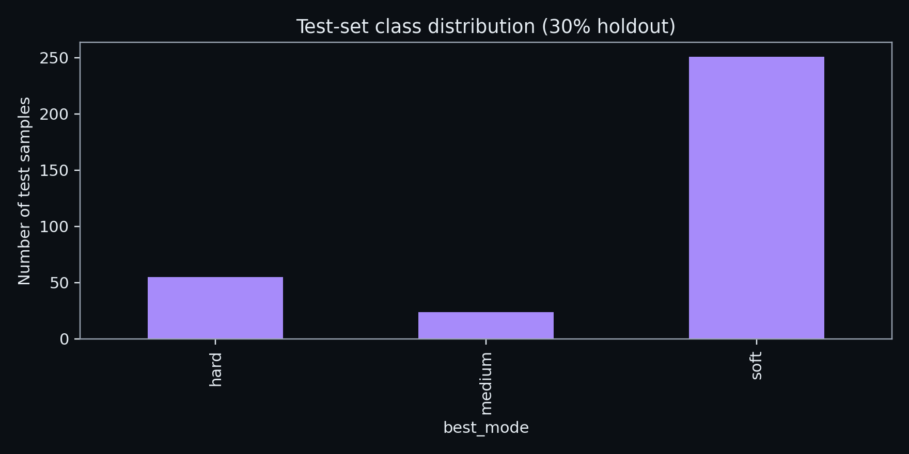
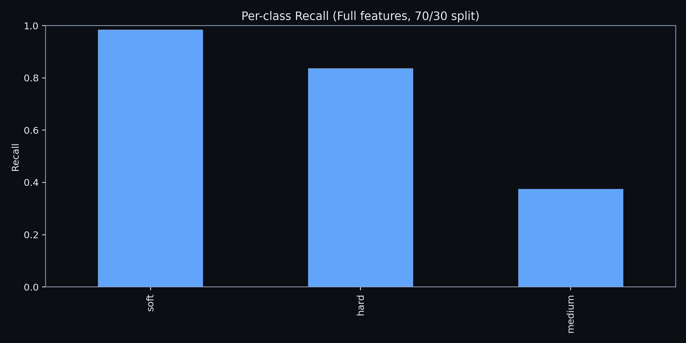

This report tests the model on new data (30% holdout) and compares Actual vs Predicted.
Dataset: /home/siddharth_s/projects/smart_adaptive_suspension/data/processed/final_ml_dataset.csv
Saved model: /home/siddharth_s/projects/smart_adaptive_suspension/models/rf_best_mode_full_70_30.joblib
CSV report: /home/siddharth_s/projects/smart_adaptive_suspension/reports/classification_report_full_70_30.csv
Examples CSV: /home/siddharth_s/projects/smart_adaptive_suspension/reports/examples_actual_vs_predicted.csv
| precision | recall | f1-score | support | |
|---|---|---|---|---|
| hard | 0.8679 | 0.8364 | 0.8519 | 55.0000 |
| medium | 0.6923 | 0.3750 | 0.4865 | 24.0000 |
| soft | 0.9356 | 0.9841 | 0.9592 | 251.0000 |
| accuracy | 0.9152 | 0.9152 | 0.9152 | 0.9152 |
| macro avg | 0.8319 | 0.7318 | 0.7659 | 330.0000 |
| weighted avg | 0.9066 | 0.9152 | 0.9069 | 330.0000 |
Some wrong (high-confidence) and correct examples.
| Actual (ground truth) | Predicted | Correct? | Confidence | depth_m_est | width_m_est | speed_mps | severity_score | road_event |
|---|---|---|---|---|---|---|---|---|
| medium | soft | False | 0.8425 | 0.180000 | 3.382416 | 6.062603 | 0.682749 | pothole_moderate |
| medium | soft | False | 0.8175 | 0.180000 | 3.189717 | 5.977853 | 0.728540 | pothole_severe |
| medium | soft | False | 0.8150 | 0.071001 | 1.524629 | 13.017574 | 0.315205 | pothole_small |
| hard | soft | False | 0.7500 | 0.133773 | 3.268535 | 4.633519 | 0.291449 | pothole_small |
| medium | soft | False | 0.7475 | 0.120708 | 3.228252 | 16.364818 | 0.236865 | pothole_small |
| medium | soft | False | 0.7300 | 0.098127 | 1.818872 | 13.226251 | 0.438518 | pothole_moderate |
| soft | hard | False | 0.7225 | 0.159749 | 2.572744 | 5.307750 | 0.593478 | pothole_moderate |
| hard | medium | False | 0.6975 | 0.071358 | 1.486997 | 14.925799 | 0.332193 | pothole_small |
| medium | soft | False | 0.6950 | 0.180000 | 3.151790 | 5.910340 | 0.739002 | pothole_severe |
| hard | soft | False | 0.6700 | 0.150570 | 2.408981 | 4.308587 | 0.593032 | pothole_moderate |
| soft | hard | False | 0.5975 | 0.152404 | 2.685550 | 5.311443 | 0.517454 | pothole_moderate |
| soft | hard | False | 0.5600 | 0.157526 | 2.652592 | 5.347204 | 0.555864 | pothole_moderate |
| soft | soft | True | 1.0000 | 0.056650 | 1.615610 | 4.505367 | 0.159551 | pothole_small |
| soft | soft | True | 0.9050 | 0.180000 | 3.039380 | 13.083536 | 0.943324 | pothole_severe |
| medium | medium | True | 0.4075 | 0.180000 | 4.342214 | 14.693153 | 0.801497 | pothole_severe |
| soft | soft | True | 0.9500 | 0.180000 | 2.644820 | 10.562635 | 0.800526 | pothole_severe |
| soft | soft | True | 1.0000 | 0.012283 | 0.236511 | 15.877038 | 0.048235 | pothole_small |
| soft | soft | True | 0.9525 | 0.105076 | 1.897427 | 9.513831 | 0.463633 | pothole_moderate |
| soft | soft | True | 0.9975 | 0.011653 | 0.211433 | 5.105889 | 0.046429 | pothole_small |
| soft | soft | True | 1.0000 | 0.063128 | 1.694454 | 8.616325 | 0.194198 | pothole_small |
| soft | soft | True | 0.9775 | 0.180000 | 3.998724 | 8.128192 | 0.726216 | pothole_severe |
| soft | soft | True | 0.9675 | 0.177811 | 2.645097 | 12.460884 | 0.672924 | pothole_moderate |
| soft | soft | True | 1.0000 | 0.049360 | 1.248836 | 5.661595 | 0.197823 | pothole_small |
| soft | soft | True | 1.0000 | 0.014117 | 0.277079 | 14.544415 | 0.074385 | pothole_small |
X-axis is sample index (shuffled order; not time). Y-axis is the class label.







